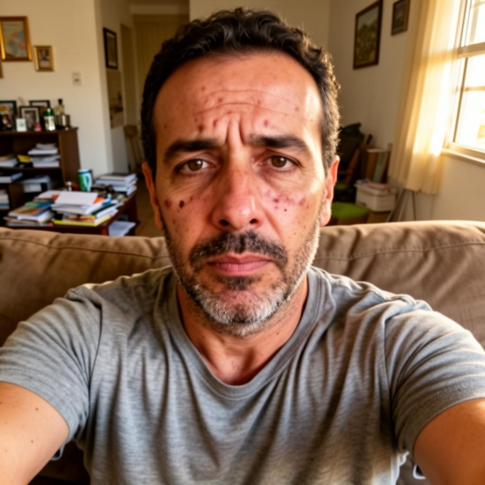
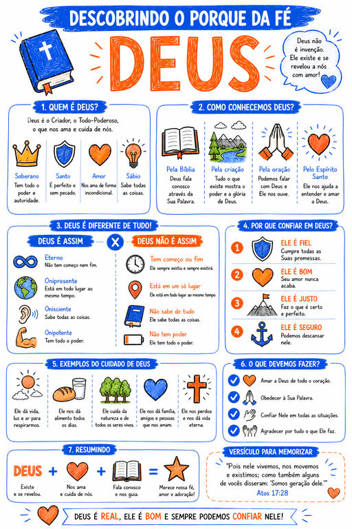
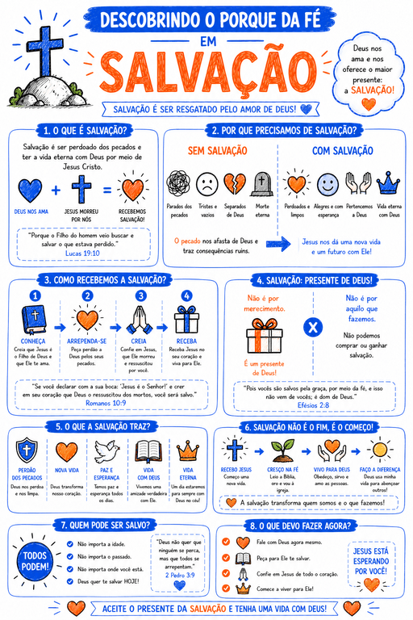
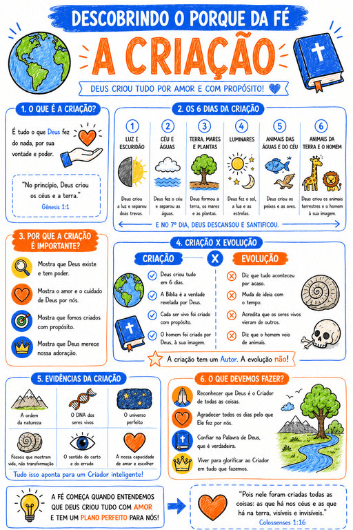
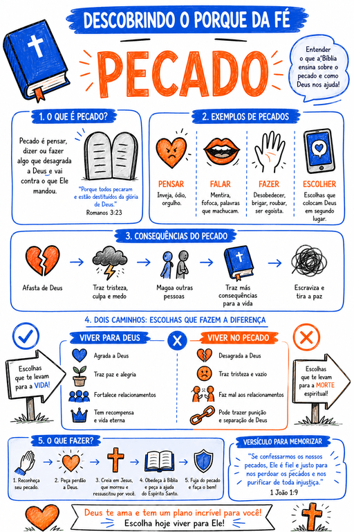

Construa uma fé
inabalável
nos seus filhos
antes que seja tarde demais.

A série digital criada por apologistas, teólogos e psicólogos infantis para ensinar crianças de 8 a 14 anos a PENSAR a fé — não apenas repetir histórias bíblicas.

+1000 famílias transformadas
Conteúdo completo Conteúdo da série
Cada lição faz a criança descobrir a verdade sozinha , criando conexões profundas e duradouras. Veja alguns dos temas abordados




E muito mais...
Um material único
Você receberá um material que vai muito além da Escola Dominical .
13 Livros Digitais
Jornada completa de 52 semanas
Acesso
Celular, tablet ou computador
Imprimível
Imprima se sua família preferir
Ritmo flexível
Pensado para uso semanal
Aproveite o preço promocional
Por tempo limitado
Aqui, seu filho não aprende apenas o que acreditar, mas por que acreditar.
Este material é ideal para você que deseja:
- Prevenir o abandono da fé no futuro
- Ajudar seu filho a responder dúvidas difíceis
- Desenvolver pensamento cristão profundo
- Ir além da Escola Dominical tradicional
- Construir uma fé firme antes da adolescência
Método de aplicação
Como aplicar o método no dia a dia do seu filho
Simples, prático e direto ao ponto.
Estudo guiado
Seu filho aprende no ritmo dele, com lições curtas e objetivas.
Conversas naturais
As perguntas do material geram diálogos profundos em casa.
Pensamento crítico cristão
Ele aprende a avaliar ideias, dúvidas e questionamentos.
Fé aplicada à vida real
A fé deixa de ser abstrata e passa a fazer sentido.
Oferta limitada apenas hoje
Série "Descobrindo o Porquê da Fé"
52 semanas de teologia sistemática para crianças.

- Base teológica sólida
- Clareza intelectual
- Segurança para responder questionamentos
- Fundamento para a adolescência
Essa oferta está disponível para as próximas 7 famílias . Depois disso, o preço será ajustado.
E não para por aí... tem mais!
Você também vai receber 3 bônus exclusivos

Bônus #1
Guia dos Pais Pensadores
Como lidar com perguntas difíceis sobre fé sem pânico, respostas prontas ou conflitos — transformando dúvidas em conversas construtivas.
Valor R$47 · GRÁTIS
Bônus #2
Manual de Erros Comuns que Enfraquecem a Fé Infantil
Atitudes comuns, porém prejudiciais, que muitos pais cometem sem perceber — e como ajustá-las para proteger o desenvolvimento da fé.
Valor R$47 · GRÁTIS

Bônus #3
Guia de Transição: Dos 14 para os 18 Anos
Como apoiar seus filhos nas mudanças cognitivas e emocionais da adolescência final, sem controle excessivo, medo ou pressão.
Valor R$47 · GRÁTIS
Última chance — oferta termina hoje
Escolha o melhor plano para você!
Plano Básico
Série completa "Descobrindo o Porquê da Fé"
- Série 'Descobrindo o Porquê da Fé' – 52 semanas
- Guia dos Pais Pensadores
- Manual de Erros Comuns que Enfraquecem a Fé
- Guia de Transição: Dos 14 aos 18 Anos
de R$74,00 por:
R$47,90
ou 12x de R$4,89 no cartão
Você economiza R$26,10
Todos os bônus inclusos · 2x mais conteúdo
Plano Completo

- Série 'Descobrindo o Porquê da Fé' – 52 semanas
- Bônus #1 Guia dos Pais Pensadores
- Bônus #2 Manual de Erros Comuns que Enfraquecem a Fé
- Bônus #3 Guia de Transição: Dos 14 aos 18 Anos
de R$147,00 por:
R$67,90
ou 12x de R$6,93 no cartão
Você economiza R$79,10
Garantia incondicional de 90 dias
Você tem 90 dias para testar a metodologia. Se por algum motivo perceber que não é para você, devolvemos integralmente o seu investimento, sem questionamentos.
Famílias que já transformaram
Veja o que nossos clientes estão dizendo
Leia os depoimentos de quem já tomou a decisão certa.
"Meu filho sempre fez perguntas difíceis e eu ficava sem saber o que responder. Esse material não me deu respostas prontas — me ensinou a conversar melhor com meu filho. Hoje ele consegue explicar por que acredita."
Ana Paula R.
Mãe de um menino de 9 anos
"Percebi que estava ensinando meu filho a repetir frases, não a pensar. A jornada me ajudou a corrigir isso. Vi meu filho ficando mais confiante para falar da fé sem ficar defensivo."
Ricardo M.
Pai de um menino de 11 anos
"Sempre tive medo das dúvidas da minha filha. Achava que ela estava se afastando. Hoje entendo que as perguntas fazem parte do crescimento. O material trouxe mais calma e profundidade."
Juliana S.
Mãe solo
Perguntas frequentes
★ Esta oferta sai do ar em
Ensinar a fé em casa é o começo.
O que muda tudo é prepará-lo para o que acontece fora dela .